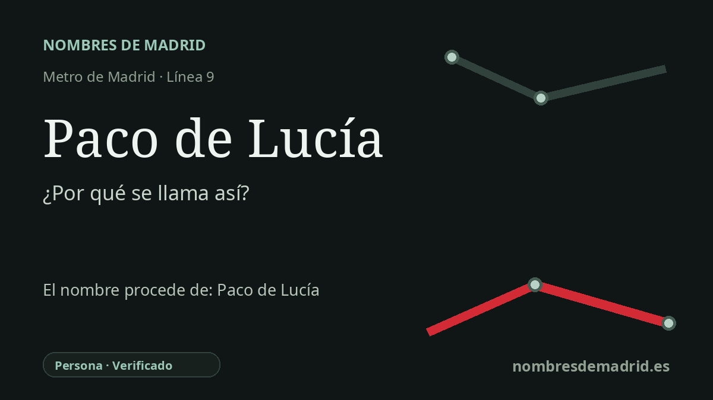

Publicado el · Investigación de Nombres de Madrid · Cómo verificamos cada origen · 7 fuentes consultadas
Respuesta rápida
La estación Paco de Lucía es un homenaje póstumo al guitarrista flamenco algecireño Francisco Sánchez Gómez, conocido mundialmente como Paco de Lucía. La estación prevista como Costa Brava, en Mirasierra, cambió de nombre tras su muerte en 2014 por su dimensión cultural internacional y por su vínculo familiar con el barrio.
La historia del nombre
La estación Paco de Lucía toma su nombre directamente del guitarrista flamenco Paco de Lucía, nacido Francisco Sánchez Gómez en Algeciras en 1947 y fallecido en Playa del Carmen, México, el 25 de febrero de 2014. El Gobierno regional madrileño anunció el homenaje dos días después, al elegir su nombre para la nueva estación de la línea 9 que se estaba terminando en la zona de Mirasierra.
El nombre no era un topónimo local antiguo. Durante la planificación y las obras, la estación se identificaba habitualmente con la calle Costa Brava, donde se construía, y las informaciones de la época la describen como la futura estación de Costa Brava. El cambio a Paco de Lucía fue expresamente conmemorativo: un reconocimiento póstumo a un músico español cuya obra llevó el flamenco mucho más allá de sus circuitos tradicionales.
El propio nombre artístico Paco de Lucía contiene también una pequeña historia onomástica. Era Francisco, Paco, hijo de Lucía Gomes Gonçalves, su madre portuguesa; en el uso social andaluz, identificar a un niño por el nombre de la madre podía distinguir a un Paco de otros. Con ese nombre se convirtió en una figura central del flamenco moderno, desde el éxito de ‘Entre dos aguas’ hasta colaboraciones que abrieron la guitarra al jazz y a otros lenguajes musicales.
La estación abrió el 25 de marzo de 2015, prolongando la línea 9 unos 1,4 kilómetros desde Mirasierra y convirtiendo a Paco de Lucía en la cabecera norte de la línea. El contexto de transporte se hizo después intermodal cuando la estación de Cercanías Mirasierra-Paco de Lucía abrió sobre ella, enlazando la parada de Metro con los servicios ferroviarios suburbanos.
El homenaje es especialmente visible dentro de la estación. El informe anual de 2015 del CRTM la describe como la primera estación de Metro de España decorada con arte urbano, con un mural de 300 metros cuadrados del rostro de Paco de Lucía realizado por Okuda y Rosh333, con Antonyo Marest y Madrid Street Art Project. La prueba del origen del nombre es, por tanto, sólida: se eligió en 2014 como homenaje público al músico, no como herencia de la calle ni del barrio.